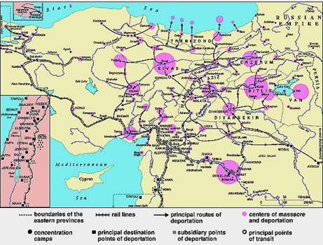

U
N
D
A
N
Y
G
A
N
O
V
>
I
N
Y
R
|

8ha~rs5 yryqan wyr
p-ne min[yv or azadarar mu hasni91
Myr undra/ undaniku
Dolmajyannyrn yn1 Myr tasungyrovhi Maria3in my/ ma3ru gu
badme ir yv ir undaniki gyankin badmov;ivnu` ]arti
0ryrovn yv ange ydk76
!(ªª6in ca.;yxink5
ys ka-asovn 0rova3 manovg yryqa3 y.a/ adyns5 orowhydyv
/no.ks gu badmer ;e ]arten 3ydo3 :ovrkyru myzi ham hod
[ein dar1 :ovrkio3 Mara, ka.aken5 ma3rs zis cirgu a-a/5
]oriin wra3 nsda/5 jamportov;ivn ura/ ynk5 ka.ake ka.ak1
Jampan 8Sam9 anovnow a-ovagi mu hantiba/ ynk yv a-ovagin
wra3 gamovr] [ga3 y.yr orovn ]ovrin me]en kalylow5
]ovrin mivs go.me bidi anxneink1 }orin [e grxa/ ]ovru
anxnil5 tebi a-ovagin agu kala/ e5 min[yv m0rs me]ku
]ovru mdyr e yv my/ ma3ru ovri, ]orii mu wra3 ullalow5
y.ylov;ivnu dysyr e5 bo-axyr e ;e 8ha~rs5 yryqan wyr
p-ne min[yv or azadarar mu hasni91 Ma3rs bo-axyr e5 isg
ys al m0rs 2a3nen aztova/ avyliow j[axyr ym1 Min[ a3n
adyn5 darikod pari arap ]oraban mu hasyr e5 ]oriin
san2en p-nyr5 tovrs hanyr e yv 8qan9 hasyr yn yv hon
m0rs hacovsdyru [orxovxyr yn1
Sovrio3 Haleb ka.aku
hasdadovyxank1 Hon a-a]in wrannyrovn dag abryxank 3ydo3
wranin dy.5 ho.u waraca3 ,inylow hon pnaga/ ynk1 Ta=an
ba3mannyrov dag abryxank5 orowhydyv /no.kis arhysdu a3t
ka.aku [er kalyr1 O[5 pnav coh [eink a3t wijagen5
sdibova/ eink abril a3t ca.;agan gyankow1 Myr oro,ovmen
tovrs er1
Darinyr anxan5 ovzeink
[ovzeink bedk er or war=oveink nor a3t ka.aki
abrylagyrbin1 ?no.ks ir arhysdu 2cyx yv ovri, arhysdow
grxav myz abryxnyl1
Myr gyanku5 ca.;ylen a-a]5 myr
babynagan ho.yrovn wra35 lav ba3mannyrov dag g\abreink5
3ydo3 yrp ca.;yxink ha3rs ir ,inarar 2y-kowu grxav myz
abryxnyl1 Min[ a3n adyn ys my/xa3 yv ha3gagan tbroxnyr
paxovyxan5 /no.ks zis a-a] dovnis m0d tbrox mu trav5 hon
al ;rkyren gu garta3ink yv 3ydo3 /no.ks dysav or hon
ha3yren [er gartaxovyr5 zis hanyx yv ha3gagan tbrox mu
trav1 Min[yv innyrort tasaran ovsovms a-i yv tbroxen yrp
yla35 h0rs m0d a,qadyxa3 ipr tyr2agovhi yv ha,ovabah1
#ydo3 amovsnaxa35 [ors zavagi der y.a3 yv Canada
ca.;yxink ov hasdadovyxank1
|
|  |
|
H-i'simei badmov;ivnu
!! darygan er yrp ]artu sgsav1
Ma3ru5 inku yv ir yrgov bzdig y.pa3rnyru mnaxa/ ein1
Ha3ru yv h0ry.pa3ru arten yrgov 0re i wyr me]dy. [ga3in
yv an gu hasgnar ir m0r garmir a[kyren or anonk in[ y.a/
ein1 Dagavin gu 3i,e in[bes yryk zinovornyr ygan
irigova3 un;riki =amanag yv ir h0r yv h0ry.p0r darin
irynxme7 gu 3i,e in[bes irynx ma3ru irynx ,ovdow darav
ba-gylov yv ink ampo.] irigovn laxav1
}arti jampovn wra35 yrgov
y.pa3rnyru or dagavin 'okr ein5 sowa/ my-an yv maman
irynx ;a.yx hsga3 /a-i mu dag yv jiv.yrow qa[ mu ,inyx1
Ir 2y-ken p-nyx yv ,arovnagyxin irynx jampan1 Jampovn
wra35 ma3ru 3ocna/ er7 /ovngyrovn wra3 ingav1 Gu 3i,e
anor anov,ig n,a2yv a[kyru or arxovnknyrow lyxova/
wyr]in hampo3ru mu dovav iryn yv ingav1 An oro,yx agama3
,arovnagyl jampan5 sirdu lyxovn5 pnav ydyv [na3ylow5
orbeszi [dysne ir m0r qy.jovg tiagu1
}arten ydk inku minagu hasa/
er Ovrfa5 hon orpanox mu mda/ er ovr ,apa;agan d.amartig
gov ca3in or hars danin1 H-i'sime arten mivs orpanoxen
d.ov mu havna/ er yv anhampyr gu sbaser or ca3 iryn hars
dani1 Hinc dari sbasyle ydk5 ovri, martov mu hyd hars
cnax Haleb5hon abryxav mi kani dari1 Ir undaniken mia3n
m0ry.p0r bzdig d.an mnaxa/ er7 zink cdav Haleb orpanoxi
mu me] yv ortycryx1 Haleben 'oqatrovyxan Lipanan7 arten
undanik mu gazma/ er1 Lipanan my/xovx ir bzdignyru yv ir
zavagnyrovn tasdiaragov;yan hamar oro,yx 'oqatrovil
Amyriga5 ovr min[yv a3s0r g\abri1
8Ipryv an2 mu or ]artu
abra/ e yv pavagan martig gorsnxovxa/5 orbeszi myr
zavagnyru a3s0r ha3 mnan5 grnam usyl or amynen garyvor
pann e or im zavagnyrs yv anonx zavagnyru o[ mia3n ha3
my/nan5 a3l` ha3 zcan1 Irynx arivnn e or *% darinyr a-a]
o[ meg badja-i hamar garmrxovx myr ;a.yru yv syvxovx myr
srdyru yv amyna3n my/ 3anxanku ys cor/a/ g4ulla3i yv im
m0rs mahu polorowin animasd gu ta-nar y;e im zavagnyrs
yv syrovntnyr ,arovnag anonxme ydk mo-nan amen in[19
A3s anwaq ginu gu go[ovi
H-i'sime Mandalyan yv min[yv a3s0r g'abri California5
Miaxyal Nahancnyrov me]1 An (^ darygan e1
|
|
|
|